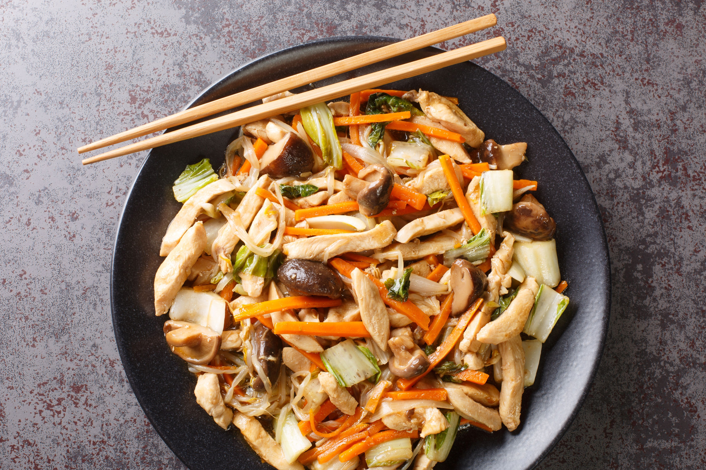
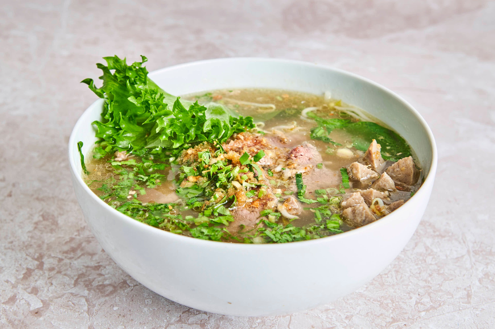
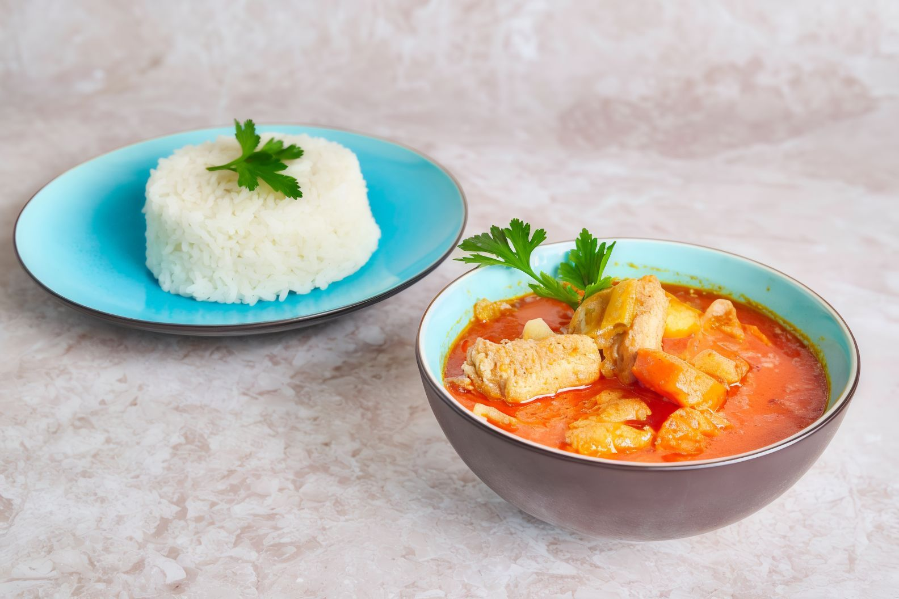
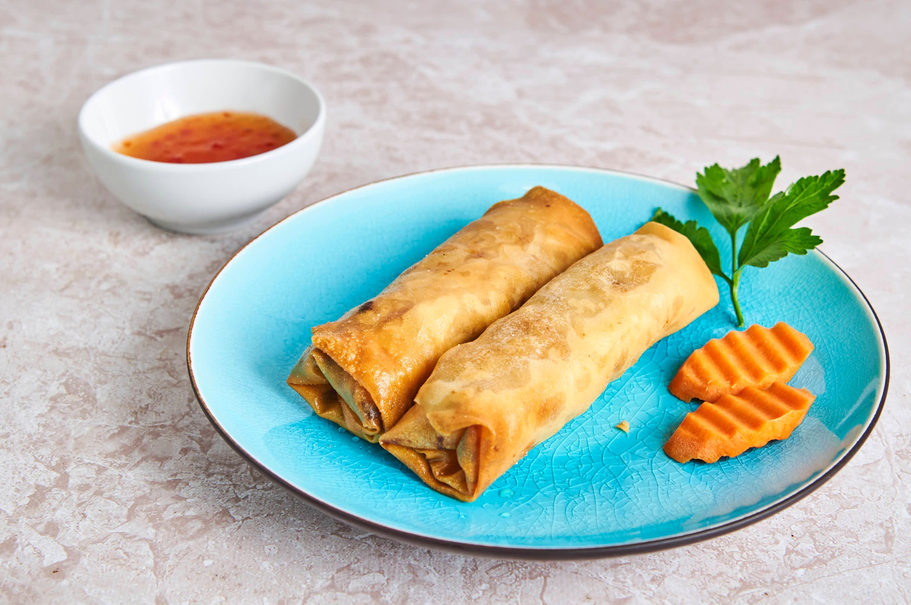

01
Nudelsuppe Kuyteav
Risnudler med oksekjøtt og kjøttboller, bønnespirer, koriander og asiatisk basilikum.
199 kr
Kambodsjansk kjøkken i Kristiansand sentrum
Dampende nudelsupper, fyldig curry, sprø vårruller og varm service rett ved Markens.
Autentisk, raus og rett på smak
Gjestene trekker frem ekte asiatisk smak, hyggelig service og retter de kommer tilbake for.
Perfekt for rask lunsj, varm middag, take-away eller levering når curry-suget melder seg.



Folk kommer tilbake
5 / 5“HIGHLY RECOMMEND!! Jeg måtte komme tilbake igjen.”
Linnéa Helleren, Google
5 / 5“Surprised to find authentic Asia food in this small town.”
Rachel Pong, Google
5 / 5“Deilig mat og vennlig service. Dette stedet gjør en forskjell.”
Tolga İsmet TINÇ, Google
Midt i byen